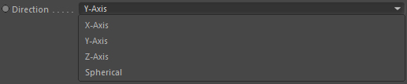
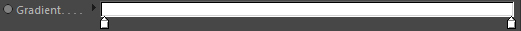

Parameters
Parameters

Alignment

An alignment node that will allow the gradient direction to be cylindrical.
Origin [Object]
Define the start of the gradient in space by using another object (start would be the left side of the Gradient setting).
This is optional. If none is defined the constraints position is used as start of the gradient.
Direction

The gradients direction in space.
X,Y,Z Axis
Direction is along the X, Y or Z-Axis.
Spherical
Direction is from the center of the Origin outward to the point of interest (so the location in space the caller node is currently processing).
One-sided
The gradient ranges from the origin to the origin + falloff distance AND origin - falloff distance along the given direction.
Activate this option to only make it range to one side.
Use squared distance
Instead of normal distance, it will use the squared distance which is more exponential.
Falloff Distance
The distance which defines the end of the gradient range in space.
So if the origin is at (0,0,0) coordinates, which is the gradient start, and Falloff is set to 100.0 then the end of the gradient range would be at (0,100,0) coordinate; assuming 'Direction' is set to Y-Axis.
It also range from (0,0,0) to (0,-100,0) if "One-sided" is turned off.
It also range from (0,0,0) to (0,-100,0) if "One-sided" is turned off.
Gradient

Defines the gradient mapping from Origin to Falloff Distance.